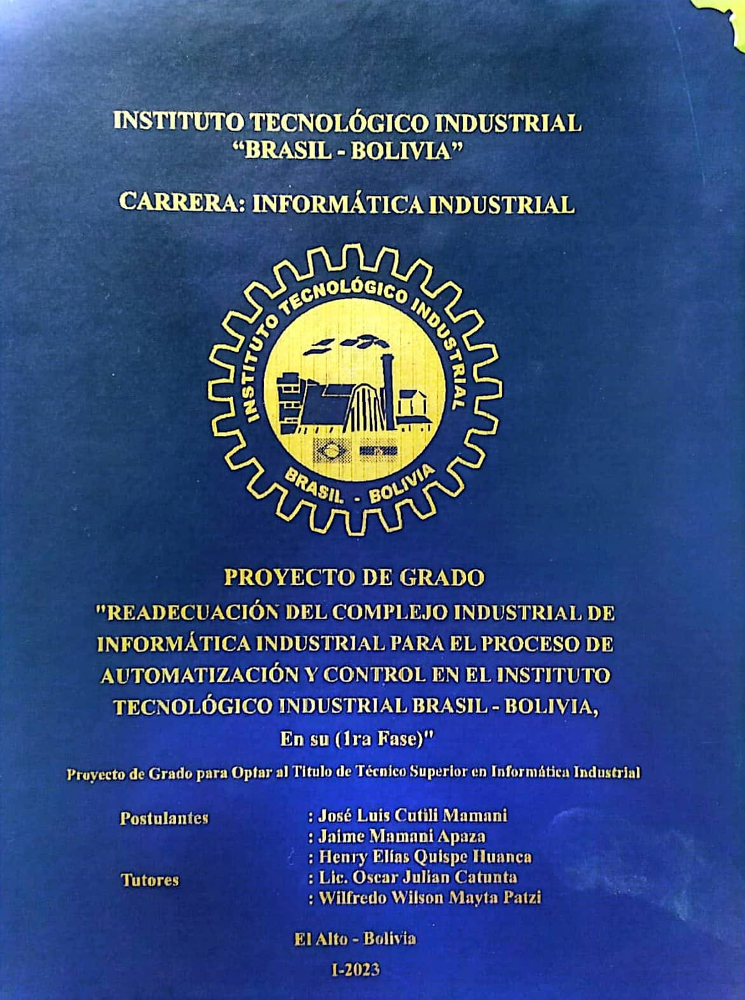

|

|
POSTULANTES Cutili Mamani, Jose L., Mamani Apaza, Jaime, Quispe Huanca, Henry E.
TUTORLic. Wilfredo Wilson Mayta Patzi, Lic. Oscar Julian Catunta
TITULO Readecuación del complejo industrial de informática industrial para el proceso de automatizacion y control en el instituto tecnológico industrial Brasil Bolivia.
DESCRIPCIÓN Proyecto de Grado para optar al título de Técnico Superior en Informática Industrial. Instituto Tecnológico Industrial Brasil – Bolivia. El Alto, La Paz. Bolivia. II-2022.
RESUMENDiseño e implementación de un enlace punto a punto de fibra óptica para el acceso a internet mediante el estándar IEEE 802.3 en el centro de procesamiento de datos de la carrera de informática industrial del I.T.I.B.B. Proyecto Sociocomunitario Productivo para optar al título de Técnico Superior en Informática Industrial. Instituto Tecnológico Industrial Brasil – Bolivia.
LUGAR Y AÑOEl Alto, La Paz. Bolivia. I-2023.
CÓDIGO 6AY36
UBICACIÓN TOPOGRÁFICA
|